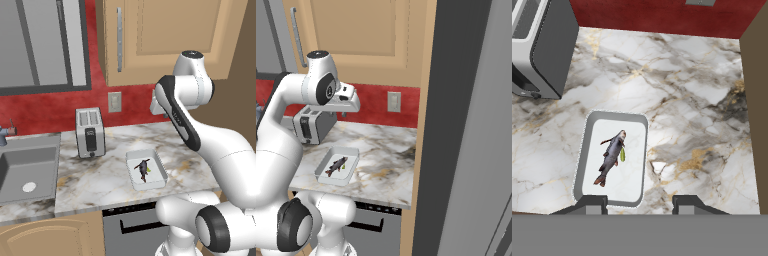
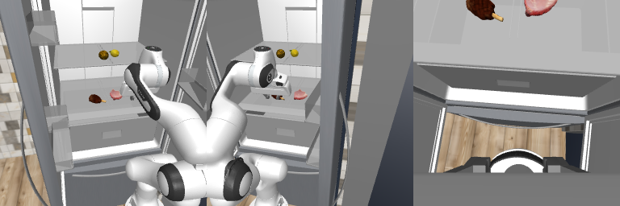

Neither
Frozen released policy. Native full episodes establish the comparison baseline.
Initial checks for the parallel-gripper and dexterous-task proposals. Real RoboCasa observations, released π0.5 weights, explicit episode accounting, and the evidence collected so far.
RoboCasa365, mobile PandaOmron, the released pi05_pretrain_human300 checkpoint. Three cameras and 16 state values feed a model with 32 internal action dimensions. It generates 50-step chunks; we execute the native five-action prefix before observing again. Normalization comes from this checkpoint. These are seen composite tasks in pretrain scenes.
| Task | Seed | Run | Resets | Segments | Actions / limit | Completion | SR |
|---|---|---|---|---|---|---|---|
| LoadPreparedFood | 9000 | 5-action smoke probe | 1 | 1 | 5 / 1,500 | Incomplete | Not measured |
| PackIdenticalLunches | 9000 | 5-action smoke probe | 1 | 1 | 5 / 3,900 | Incomplete | Not measured |
| LoadPreparedFood | 0 | Time-limit interruption | 1 | 142 | 708 / 1,500 | Incomplete | Not measured |
A reset-free segment is one executed prefix, not another rollout for SR. The interrupted episode's last segment contains three recorded actions. Three additional constructor reset calls prepared the environments; they did not start policy evaluation trials. An interrupted control call may have advanced the simulator partially beyond the last complete recorded action.
Source revision, checkpoint shards, normalization, cameras, action dimensions and horizon.
Two RoboCasa smoke probes passed. Full-episode baseline evaluation remains incomplete.
Four conditions with a frozen protocol and explicit physical interaction counts.
Separate held-out tasks/resets and autonomous student evaluation from assisted performance.
Planned collection checkpoints: 1, 2, 4, 8 and 16 reset episodes. None of these guidance or learning comparisons has run on the new benchmarks. The intervention implementation and learning rule must be frozen after native policy validation.
Frozen released policy. Native full episodes establish the comparison baseline.
Astra observes images, robot state and collection history, then steers the frozen policy. Log interventions, tokens, latency and every reset.
Improve from the same declared interaction budget without Astra. Evaluate the updated student independently.
Use Astra-guided collection and update between episodes. Report assisted execution and the autonomous student as distinct outcomes.
| Benchmark | Requested tasks | What is verified | What remains |
|---|---|---|---|
| RoboCasa365 | LoadPreparedFood PackIdenticalLunches | Released weights restored; real camera inputs, native predictions and environment steps. | Complete native episodes; guidance and learning experiments. |
| Bench2Dex | Jigsaw Puzzle Assembly Fridge Wine Interhand Pour | Pinned task policies and replay anchors; 54 / 38 active joints; four cameras; 20-action chunks. | Simulator and runtime joint-order validation. Selected weights, assets and two replay anchors archived and hash-checked, with a separate supplement for two anchor distractors. Native limits: 1,213 / 1,080 control actions. No rollout has run. |
| BEHAVIOR-1K | Make Pizza Sorting Household Items Clean Up Your Desk | Specialized checkpoints mapped to tasks 49 / 27 / 29. | Modified PiBehavior interface and simulation. Task embeddings differ from stock text conditioning. |
| EmbodiedSWE | PC assembly IKEA table assembly | Requested environment configurations exist. | A capable matching trained System1 checkpoint is not verified. |
| DexVerse | OvenBakeSalmon CleanTable | Public asset/demo release inspected. | Matching policies or demonstrations for these exact long-horizon tasks remain unverified. |
Each video shows the actual left, right and wrist views. The two short clips contain only five actions. The longer clip contains the recorded part of one interrupted episode; it is not a completed failure.
5-action smoke probe · 5 recorded actions

Place the tupperware on the second highest shelf of the fridge. Make space for the tupperware among the existing items by rearranging them on the shelves if needed. Close the fridge door when finished.
5-action smoke probe · 5 recorded actions

Place one lemon and one steak in each tupperware on the nearby counter, to pack two identical lunches.
Time-limit interruption · 708 recorded actions

Place the tupperware on the top shelf of the fridge. Make space for the tupperware among the existing items by rearranging them on the shelves if needed. Close the fridge door when finished.
The longer attempt generated 142 chunks and executed 708 recorded controls in 122.1 seconds after reset recording. Its first inference call took 43.15 seconds including JIT compilation. The remaining 141 calls averaged 100.06 ms. Asset restoration and environment setup are additional costs, included in the GPU allocation ledger.
Teacher calls: 0. Teacher tokens: 0. Policy updates: 0. No conclusion about Astra's benefit follows from these probes. Camera and action mappings were checked against the pinned upstream code; an independent same-noise numerical comparison against its full factory was not run.
Prior study plus these probes: 22.346 / 24 L40S-hours. Additional compute authorization is pending. The new GPU jobs are closed. GPU-zero preparation is accounted separately. Large setup costs made the bounded full-episode attempt incomplete; it must be rerun with enough time before scoring.